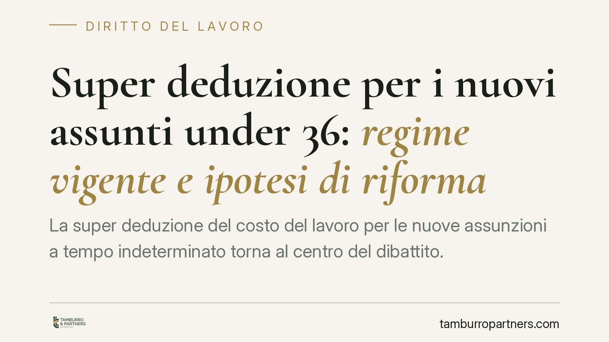

Super deduzione per i nuovi assunti under 36: regime vigente e ipotesi di riforma
La super deduzione del costo del lavoro per le nuove assunzioni a tempo indeterminato torna al centro del dibattito. Oggi la maggiorazione è del 20%, elevabile al 30% per categorie protette, tra cui spesso rientrano giovani e donne. Una proposta allo studio ipotizza un rafforzamento sensibile per gli under 36. Vediamo cosa è già vigente e cosa resta ipotesi.

Il quadro: una deduzione, non un bonus
Prima di ogni cosa un chiarimento che evita fraintendimenti costosi. La super deduzione non è un contributo né un credito d'imposta: è una maggiorazione del costo deducibile ai fini delle imposte sui redditi. In pratica, a fronte di nuove assunzioni a tempo indeterminato, l'impresa può dedurre un importo superiore al costo effettivamente sostenuto.
Ne consegue un punto decisivo: il beneficio si traduce in minori imposte solo in presenza di reddito imponibile. Un'impresa in perdita non ricava vantaggio immediato dalla maggiorazione, se non nei limiti del riporto delle perdite. Chi valuta l'assunzione come "sconto" automatico parte da un presupposto sbagliato.
Il regime oggi vigente
La disciplina di riferimento è contenuta nell'art. 4 del d.lgs. 30 dicembre 2023, n. 216, che ha introdotto la maggiorazione del costo del personale di nuova assunzione a tempo indeterminato. La misura base è una maggiorazione del 20% del costo riferibile all'incremento occupazionale.
È prevista una maggiorazione ulteriore (fino a un 30% complessivo) per l'assunzione di lavoratori appartenenti a categorie meritevoli di maggiore tutela, individuate in sede attuativa. L'agevolazione, nata per il solo periodo d'imposta successivo a quello in corso al 31 dicembre 2023, è stata prorogata per il triennio successivo dalla legge di bilancio 2025 (L. 30 dicembre 2024, n. 207).
> Nota di revisione: la riconducibilità specifica degli under 36 e delle donne alle categorie con maggiorazione al 30% dipende dal decreto attuativo e va verificata caso per caso prima di qualunque calcolo.
Come si misura l'incremento occupazionale
Il beneficio non spetta per ogni singola assunzione, ma solo in presenza di un incremento occupazionale netto. Due condizioni concorrono:
- il numero dei dipendenti a tempo indeterminato a fine periodo deve superare quello medio dell'esercizio precedente;
- l'organico complessivo (inclusi i contratti a termine) non deve diminuire rispetto alla media precedente.
In sostanza, non basta assumere: occorre che l'organico cresca davvero e che la crescita non sia compensata da uscite altrove nel gruppo. Il costo agevolabile è poi il minore tra il costo dei nuovi assunti e l'incremento complessivo del costo del personale risultante dal conto economico.
Under 36: l'ipotesi di rafforzamento
È in discussione una proposta di innalzamento della maggiorazione per i nuovi assunti under 36 a tempo indeterminato, con una percentuale aggiuntiva ancora più elevata per le lavoratrici donne.
Chiariamo con nettezza: si tratta di un'ipotesi non vigente. Le percentuali che circolano (una maggiorazione portata al 40%, con un ulteriore surplus per le donne) non hanno efficacia normativa finché non vengano approvate e pubblicate. Riportiamo il meccanismo a fini informativi, non come regola applicabile.
Il ragionamento aritmetico, nello scenario massimo prospettato, sarebbe questo: su un'aliquota IRES del 24%, una maggiorazione del 40% del costo produrrebbe un risparmio fiscale pari a circa il 9,6% del costo stesso (24% × 40%). È il tetto teorico, raggiungibile solo in presenza di utili capienti e del rispetto integrale delle condizioni occupazionali.
Implicazioni pratiche
Per l'impresa che sta pianificando assunzioni, il messaggio operativo è duplice. Sul regime vigente si può e si deve ragionare da subito: la maggiorazione del 20-30% è reale e utilizzabile nella prossima dichiarazione. Sull'ipotesi di riforma, invece, vale la prudenza: nessuna decisione andrebbe fondata su percentuali non ancora in vigore.
Resta centrale la variabile della redditività. Un beneficio sotto forma di deduzione premia chi genera reddito imponibile; chi è in perdita deve valutarne l'effettivo ritorno nel tempo.
Cosa fare in concreto
- Verifica la base di calcolo. Ricostruisci la media dell'organico dell'esercizio precedente, a tempo indeterminato e complessivo, per stabilire se ci sarà incremento netto.
- Stima la capienza fiscale. Proietta il reddito imponibile atteso: senza utili, la deduzione non produce risparmio immediato.
- Classifica correttamente i nuovi assunti. Accerta se rientrano nelle categorie con maggiorazione al 30%, sulla base del decreto attuativo vigente.
- Non contare sulle percentuali future. Fonda le decisioni di assunzione sul regime in vigore; tratta il resto come scenario in divenire.
- Documenta tutto. Conserva prospetti su organico, costo del personale e calcolo dell'incremento, a supporto in sede di controllo.
Ogni storia di lavoro ha i suoi tempi.
Se gestisci HR e vuoi un confronto su contenzioso, ispezioni o licenziamenti, scrivi allo studio. Ti rispondiamo entro un giorno lavorativo.